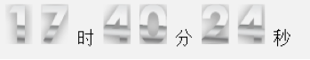

1.BOM概念
什么是BOM？
BOM是Browser Object Model的缩写，简称浏览器对象模型。这个对象就是window
BOM提供了独立于内容而与浏览器窗口进行交互的对象
BOM由一系列相关的对象构成，并且每个对象都提供了很多方法与属性
BOM缺乏标准，JavaScript语法的标准化组织是ECMA，DOM的标准化组织是W3C
BOM最初是Netscape浏览器标准的一部分
由于BOM主要用于管理窗口与窗口之间的通讯，因此其核心对象是window。
JavaScript的组成：ECMAScript、BOM、DOM，其中ECMAScript为JavaScript的核心，但是如果要在浏览器中使用JavaScript，那么BOM才是JavaScript的核心。
川普，超级大国总统，人类世界接近顶端的人物
丢到原始森林，会发生一些什么事？
在什么地方就得遵循什么地方的规则。
也就是说， 无论ECMAScript有多权威，进了浏览器，就得遵守浏览器的规则。
2.window对象介绍，内置对象（location／history／navigator）及方法
什么是window对象，window对象是浏览器内置的一个对象，相当于BOM的一个抽象
window对象是js中全局对象的寄存地。
window对象的常见方法：
alert(要显示的文本); //弹出信息框
prompt(提示 对话框信息); //弹出输入框，点击确定，返回字符串，点击取消，返回null
confirm(提示文字); //点击确定返回true，点击取消返回false
close(); //关闭浏览器（火狐不支持！），但都支持通过别的网页打开的新的网页关闭
//不允许关闭非脚本打开的页面
open(url,name,feature,replace);
//open('http://www.baidu.com','_blank','width=300,height=300')
//谷歌会默认把系统自动打开的新网页阻止掉，但不阻止通过事件打开的网页
window对象下内置的子对象：
1.history对象：该对象包含浏览器访问过的url。
该对象的属性：
history.length; //返回历史记录的数量
该对象的方法：
history.back(); //后退，加载前一个url。
history.forward(); //前进，需要后退一下之后，才有前进的方向
history.go(num); //参数为正，前进相应的数目，为负，后退相应的数目，为0，刷新
2.location对象：包含当前url的相关信息，而history对象不能具体反映url的相 关信息。
该对象的属性：
location.href; //设置或返回完整的url
location.search; //返回url?后面的查询部分
location.hash; //是一个可读写的字符串，是url的锚部分（从#开始的部分）哈希
该对象的方法：
location.reload(); //刷新页面的方法，一般情况下，传递一个true，不使用缓存刷新。 缓存？
location.assign(url); //加载新页面，当url为空字符时，加载当前页面
3.navigator对象：浏览器信息
navigator.appName; //返回当前浏览器名
navigator.appCodeName; //返回当前浏览器的代码名
navigator.appVersion; //返回当前浏览器的版本号和平台
navigator.platform; //返回当前计算机的操作系统
以上方法已经在逐渐被抛弃，出现一个新的属性替代这些属性：
navigator.userAgent; //返回浏览器信息
拓展：4.frames对象：包含当前页面所有的框架信息。
frames.length; //返回当前页面的框架数量
frames[0].location; //修改第一个框架的地址
5.screen对象：包含当前显示屏信息
screen.width/height //屏幕总宽高度
screen.availWidth/availHeight //屏幕的宽高（不包括任务栏）
3.定时器
延时器：setTimeout(function(){
console.log(1); //1000毫秒后，打印1
},100)
语法： setTimeout(函数或者代码串，指定的时间(毫秒));
在指定的毫秒数后只执行一次函数或代码。
清除延迟器：clearTimeout();
定时器：setInterval(function(){
console.log(1); //每隔1000毫秒，打印一次1
},100)
语法：setInterval(函数或者代码串，指定的时间(毫秒));
按照指定的周期(毫秒)不断的执行函数或者是代码串。
表示每隔指定的时间，执行一次函数
清除定时器：clearInterval();
注意思考：为什么要清除计时器或延时器呢？
功能：一定时间后调用
参数：两个参数，一个函数，一个毫秒
返回值：数字，当前定时器的唯一编号，用于关闭定时器
1.广告弹出框（自动关闭）
至少再添加两个功能
页面加载完成之后，自动打开一个广告弹出框，10秒中之后自动关闭，关闭之前，在这个弹出框中有至少两个功能
2.进度条
1.window.onload / onscroll／onresize 事件
onload当文档加载完成后执行一些操作
window. onload = function(){
console.log("页面加载完成")
}
onscroll当页面发生滚动时执行一些操作
window. onload = function(){
console.log(1) //当页面发生滚动时，打印1
}
onresize当窗口大小发生改变时执行一些操作
window. onresize = function(){
co nsole.log(1) //当窗口大小发生改变时，打印1
}
页面滚动条距离顶部的距离
document.documentElement.scrollTop
页面滚动条距离左边的距离
document.documentElement.scrollLeft
2.DOM的概念和作用
DOM是document Object Model的缩写，简称文档对象模型。他给文档提供了一种结构化的表示方式，可以改变文档的内容和呈现方式，我们最关心的是，DOM把网页和脚本以及其他的编程语言联系了起来
所谓的DOM是以家族的形式描述HTML。父子节点，兄弟节点
JS用来做行为的，如何产生行为，当发生改变的时候，就产生了行为
改变元素的内容(innerHTML)，属性(value)，样式 (width,height,background)
改变之前，至少应该先选择到要改变的元素
DOM中的选择器
1.getElementById(id) //获取指定元素的ID元素
2.getElement sByTagName() //获取相同元素的节点列表，通过标签名选择元素，返回值是一个数组
3.getElement sByName() //通过name值获取元素，返回值是数组，通常用来获取有name的input的值
4.getElement sByClassName() //通过class名获取元素，返回值是数组n
注意：1. 不是所有标签都有name值；2.在低版本的浏览器中，getElementsByName和getElementsByClassName有兼容性
JS缺德定律：好用的东西都有兼容性
ES5选择器：
document.querySelectorAll(); //强大到超乎想象，支持IE8+。ECMAScript借鉴了jQuery选择器的
//返回一个数组，哪怕只有一个元素
document.querySelector();
//返回单个元素
根据父级，选择子级：
oDiv.children; //返回一个数组
根据子级，选择父级：
oSpan.parentNode; //返回一个元素
1.顶部悬浮-----使用js模拟position:fixed
获取页面滚动的距离，
将距离值动态的赋给元素的top或者left
可以使用position:absolute
2.回到顶部----缓动效果
3.进度条效果----高级版
4.数码时钟
